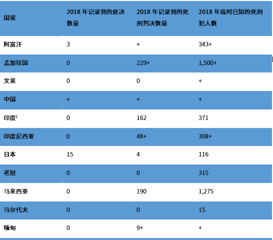
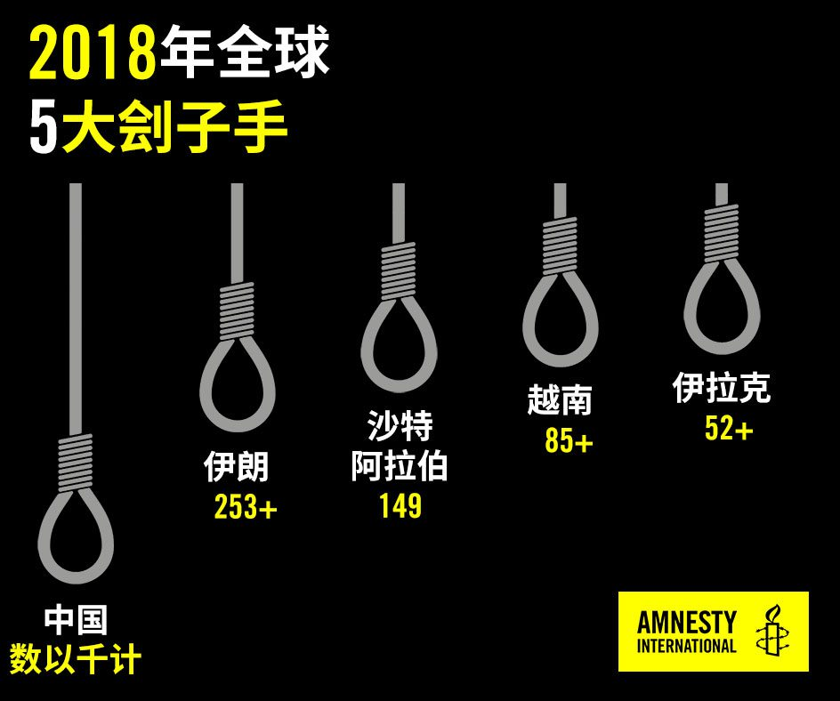

亚太地区于2018年已知的处决数量增加了至少136宗，主要原因是越南当局罕有地披露相关数据。由于难以取得相关信息，区内的处决总数仍然有数字上的差异，而与前几年一样，这些数字并不包括被认为在中国发生的数以千计处决。然而，总数仍然在前几年录得的范围内（2017年为93宗，2016年为130宗）。
巴基斯坦的死刑执行数量持续下降，据报与2017年的60宗相比，2018年进一步减少了77％，但日本在一起广受关注的案件中绞死13人后，年度处决数字却增加了两倍多，从4起增至15起。中国和朝鲜的数据仍然秘而不宣，妨碍我们对两国的趋势进行准确评估，越南在某种程度上也受到同样的影响。

+表示国际特赦组织计算的数字是最低数字；如+之前没有数字，表示国际特赦组织确信至少有一次处决，但无法确定数字。
9个亚太地区国家的处决数量与2017年相同，原因是孟加拉国和马来西亚并没有执行任何死刑判决，而台湾和泰国则在暂停处决后恢复了执行死刑。印尼已连续第二年没有执行死刑。
据了解，该地区新增了至少1,100起死刑判决，比前一年纪录到的1,037起略有增加。已知的死刑判决数量出现变化，主要是由于取得的数据出现数字上的差异，特别是马来西亚和斯里兰卡。在马来西亚，国际特赦组织首次获得官方数据，比以往通过监察法院和媒体而取得的数字有显著增加。在斯里兰卡，当局并没有提供有关信息，国际特赦组织收集到的数据可能远低于真实数字。印度法院判处死刑的数量比上一年多了50％，由108宗增至162宗。
据知17个国家有死刑判决，马尔代夫在2017年仍有死刑判决，但2018年没有判处任何人死刑。
亚太地区的国家使用死刑时，往往违反国际法和国际标准。根据国际法，死刑仅限于“最严重罪行”，然而此刑罚在亚太地区却被广泛用在未达到该门槛的罪行，包括腐败等经济犯罪，甚至在国际法下根本不被视为犯罪的行为，如“亵渎罪”和与涉毒罪行。
中国和新加坡据报有就涉毒犯罪执行处决，但国际特赦组织未能证实越南去年是否也有这类处决个案。据知有9个国家为惩罚涉毒犯罪而判处死刑，使亚太地区再次成为全球针对此类犯罪诉诸死刑比例最高的地区。
中国
国际特赦组织相信，中国继续执行并判处数以千计的人死刑，是世界上处决人数最多的国家。有关使用死刑的数据仍被列为国家机密，令人无法独立评估有关趋势，以及政府官员声称处决数量有所减少的可能性。 国际特赦组织再次呼吁中国政府提高使用死刑的透明度，并全面公开相关信息。
死刑仍然适用于46项罪行，包括一些不符合“最严重罪行”门槛的非暴力罪行。根据国际法及国际标准，死刑只限于“最严重罪行”。国际特赦组织通过监测一年间收到的信息，以及上传至最高人民法院网上数据库中的裁判文书， 记录到的大多数死刑案件皆涉及谋杀和涉毒罪行。

6月23日，广东省陆丰当局就10名被判犯了涉毒罪行的人举行公开“宣判大会”。最高人民法院核准所有人的判决，并在宣判后即时执行处决。
中国至少有两宗死刑判决与贪腐有关，其中一起“暂缓执行死刑”，犯人在没有犯下其他罪行的情况下，于监禁两年后可获减刑。另一起案是涉及前任副市长的瞩目案件，但却没有提供这种减刑的可能性，令该案成为对整个社会的警示。
国际特赦组织对新疆维吾尔自治区仍秘密使用死刑表示关切。有关新疆维吾尔自治区的死刑判决，媒体的报道非常有限，目前只有著名维吾尔商人阿卜杜勒加帕尔·阿卜杜鲁苏尔（Abdughapar Abdurusul）的案件被报导。他的家人表示，他们担心他没有得到律师的协助，就在涉及几名被告的审判中被定罪。 近年来，新疆维吾尔自治区当局在所谓的“人民战争”和“严打”运动中加强安全措施，影响该地区主要为穆斯林的少数民族。这类运动通常导致死刑使用增加。学者曾批评，这些诉讼程序缺乏公正审判的保障，容易造成“非法处决”，却被用作为镇压的手段之一。
马来西亚
新当选的马来西亚政府于7月2日宣布，在该国的死刑法审查工作完成之前，已暂停执行死刑。 10月10日，首相署内实际上负责法律事务的部长拿督刘伟强（Datuk Liew Vui Keong）宣布，根据国家法律，32项可被判死刑的罪行中，内阁决定废除其死刑惩罚。但截至今年年底，实现这一目标的立法修订尚未提交国会。
国会于2017年底通过了1952年的《危险药物法》修正案，并于3月生效。法律在修订后，对所有贩毒案件保留了强制性死刑，但对那些因运输、发送或交付违禁物质而被定罪的人，如与执法部门合作挫败贩毒活动，则不会强制性判处死刑，但这种情况少之又少。在这种情况下，唯一可处以的替代刑罚是无期徒刑和不少于15下的鞭刑（为国际法禁止的残忍惩罚）。有别于关于改革的国际法及国际标准，修订后的法律不适用于以前曾被定罪的个人。
官方提供的数字显示，这一年有190人被判处死刑，其中136人（72％）涉及毒品相关犯罪，48人（25％）涉及谋杀罪，3人（2％）涉及枪械罪，还有3人（2%）因绑架和谋杀。这些案件中有60人（32％）是外国国民，其中51人（38％）涉及与毒品有关的案件，9人（19％）涉及谋杀案。
截至2018年12月，马来西亚有1,275名死囚。今年早些时候发表的报告显示，死囚中有142名（11％）女性和568名（45％）外国人；932人（73％）因涉毒犯罪被定罪，317人（25％）涉及谋杀罪。其他被判死刑的人所犯的罪行包括非法持有枪支（13起）、涉及向国家元首宣战之罪（9起）、绑架（5起）、抢劫导致死亡（2起）以及《内部安全法》中的一项犯罪（1项），但此罪行已被废除。
新加坡
如前几年一样，新加坡在使用死刑方面有逐渐上升的趋势，主要用于涉毒品犯罪。自2003年以来，新加坡的执行死刑数量首次达到两位数。在13起处决当中，有7起在10月执行，当中11人被判贩毒罪，2人被判谋杀罪。
该国作出了17起新的强制死刑判决，其中一起涉及谋杀，16起涉及贩毒。其中两起由上诉法院判处。
9月17日，《刑事诉讼法》修正案生效。修正案引入多项措施，其中包括在警方审问期间拍摄录像，以及限制人们在定罪和判刑最终确定后可向法院提出上诉的理由。
台湾
台湾自2016年以后首次于8月31日执行死刑，是蔡英文总统领导下的政府首次批准执行死刑。蔡清祥被任命为法务部部长一个月后，就下令执行这起处决；而在不足24小时之前，一名前死囚才被高等法院判定可获1,700万新台币（550,000美元），作为其冤案的赔偿。 案中男子于2006年首次被判处死刑，后于2017年被判所有罪名不成立。
2月，一名男子因凶杀罪成被判死刑；7月，另外两名男子各自因纵火罪和凶杀罪成而被判死刑。一个月后，最高法院推翻另一名男子的纵火定罪和死刑判决，并下令于10月重审。 截至年底，台湾共有42名死囚，其判刑已是最终判决。
越南
越南作出罕见的措举。2018年11月13日，越南司法部长黎成龙（Lê Thành Long）在国民议会表示，与前一年相比，该国诉诸这种惩罚的数量激增。据部长称，截至11月初，该国已执行了85起处决，并判处122人死刑。
尽管越南罕有地发表这种声明，但有关使用死刑的数字仍被列为国家机密。当局在2017年和2018年披露的处决和死刑判决数字，证实了国际特赦组织和其他团体多年来的关切，但这些数字与该国在现实中实施死刑的情况相比，只是冰山一角。
与往年一样，国际特赦组织继续监测该国的处决和死刑判决报告，但只能够收集到有限的案件信息。这些报告显示，死刑继续广泛用于涉毒犯罪和谋杀罪上，仍有几名人士因贪腐等经济犯罪而受到这种惩罚。
在对越南的审议中，禁止酷刑委员会关注到，通过酷刑获得的口供据报导致死刑判决。委员会进一步强调，极其恶劣的拘留条件可构成酷刑或虐待，包括在不通风的囚室中单独监禁；食物和水不足；每天24小时被戴着手铐脚镣；还有身体虐待。 委员会建议建立一个有效的系统，以在全国收集统计数据，包括使用死刑的数据。